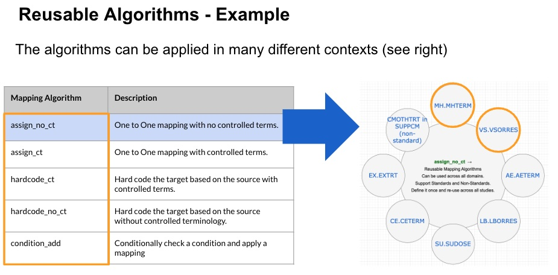

flowchart LR A[Raw] --> B[SDTM] B[SDTM] --> C[ADaM] C[ADaM] --> D[ARD] D[ARD] --> E[TFL] %% Apply the custom class "highlight" to node B class B highlight; %% Define the style for the "highlight" class: classDef highlight fill:#F9B, stroke:#333, stroke-width:2px;
CDISC SDTM (Study Data Tabulation Model) datasets in R
Objectives
- By the end of this workshop you will have:
- Gained an understanding of how to use
sdtm.oakand algorithms. - Seen code executed for SDTM
VSandDMusingsdtm.oak. - Gained an understanding of how to use resources for building SDTM in
R.
- Gained an understanding of how to use
End to End with Barb!!
Assumptions
- Basic knowledge of CDISC Standards (SDTM Domains)
- Check out the SDTM IG & other documents
🦺 But even lacking CDSIC knowledge, we still think you will gain some great learnings today! 🦺- Basic familiarity in R, RStudio IDE and its packages
Agenda
🕙 20 minutes Introduction to
sdtm.oak🕥 20 minutes
VSdomain programming & check in on Barb🕦 10 minutes
DMdomain programming & check in on Barb🕦 10 minutes short exercise
Introduction to sdtm.oak
About the package
- Sponsored by CDISC COSA, pharmaceutical companies, including Roche, Pfizer, GSK, Vertex, Atorus Research, Pattern Institute, Transition Technologies Science.
- Part of the pharmaverse Group of packages.
- Inspired by the Roche’s
roakpackage. - Addresses a critical gap in the pharmaverse suite by enabling study programmers to create SDTM datasets in R, complementing the existing capabilities for ADaM, TLGs, eSubmission, etc.
Challenges in SDTM Programming
- Although SDTM is simpler with less complex derivations compared to ADaM, it presents unique challenges. Unlike ADaM, which uses SDTM datasets as its source with a well-defined structure, SDTM relies on raw datasets as input.
- Raw Data structure - Different EDC systems produce data in different structures, different variable names, dataset names etc.
- Varying Data Collection standards - Although CDASH is available, the companies can still develop varying eCRFs using CDASH standards.
sdtm.oak v0.2
- v0.2 is avaiable on CRAN.
- EDC agnostic
sdtm.oakis designed to be highly versatile, accommodating varying raw data structures from different EDC systems and external vendors. - Data standards agnostic It supports both CDISC-defined data collection standards (CDASH) and various proprietary data collection standards defined by pharmaceutical companies.
- Provides a framework for modular programming, making it a valuable addition to the pharmaverse ecosystem.
Algorithms
Key concepts
- The SDTM mappings that transform the collected source data into the target SDTM data model are grouped into algorithms.
- These mapping algorithms form the backbone of
SDTM Data Transformation Engine • sdtm.oak sdtm.oak - Algorithms can be re-used across multiple SDTM domains.
- Programming language agnostic This concept does not rely on a specific programming language for implementation.
sdtm.oakhas R functions to represent each algorithm
assign_no_ct
| Algorithm or Function | Description of the Algorithm | Example SDTM mapping |
|---|---|---|
| One-to-one mapping between the raw source and a target SDTM variable that has no controlled terminology restrictions. Just a simple assignment statement. | MH.MHTERM AE.AETERM |
assign_ct
| Algorithm or Function | Description of the Algorithm | Example SDTM mapping |
|---|---|---|
| One-to-one mapping between the raw source and a target SDTM variable that is subject to controlled terminology restrictions. A simple assign statement and applying controlled terminology. This will be used only if the SDTM variable has an associated controlled terminology. | VS.VSPOS VS.VSLAT |
assign_datetime
| Algorithm or Function | Description of the Algorithm | Example SDTM mapping |
|---|---|---|
| One-to-one mapping between the raw source and a target that involves mapping a Date or time or datetime component. This mapping algorithm also takes care of handling unknown dates and converting them into. ISO8601 format. | MH.MHSTDTC AE.AEENDTC |
hardcode_ct
| Algorithm or Function | Description of the Algorithm | Example SDTM mapping |
|---|---|---|
| Mapping a hardcoded value to a target SDTM variable that is subject to terminology restrictions. This will be used only if the SDTM variable has an associated controlled terminology. | MH.MHPRESP = ‘Y’ VS.VSORRESU = ‘mmHg’ |
hardcode_no_ct
| Algorithm or Function | Description of the Algorithm | Example SDTM mapping |
|---|---|---|
| Mapping a hardcoded value to a target SDTM variable that has no terminology restrictions. | CM.CMTRT = ‘FLUIDS’ VS.VSCAT = ‘VITAL SIGNS’ |
condition_add
| Algorithm or Function | Description of the Algorithm | Example SDTM mapping |
|---|---|---|
| Algorithm that is used to filter the source data and/or target domain based on a condition. The mapping will be applied only if the condition is met. This algorithm has to be used in conjunction with other algorithms, that is if the condition is met perform the mapping using algorithms like assign_ct, assign_no_ct, hardcode_ct, hardcode_no_ct, assign_datetime. | If MDPRIOR == 1 then CM.CMSTRTPT = ‘BEFORE’. VS.VSMETHOD when VSTESTCD = ‘TEMP’ |
oak_cal_ref_dates
| Algorithm or Function | Description of the Algorithm | Example SDTM mapping |
|---|---|---|
| Derivation of Reference dates in the DM domain | DM.RFSTDTC DM.RFPENDTC |
Reusable Algorithms
Algorithms compared to dplyr
sdtm.oakalgorithms enhancesdplyrfunctions- Allowing users to perform multiple actions within a single function call.
- Applying if_else condtions, Controlled Terminology in a single function call by providing a simple approach compared to case_when statements.
- Mapping an SDTM variable only if the source contains data, which is particularly useful when hardcoding.
- Handling unknown dates, as well as date and time collected in separate or the same raw variables.
- Adding qualifiers to topic variables using oak id variables.
- While all these can be achieved using
dplyr, the algorithms insdtm.oakprovide a more elegant and efficient approach.
sdtm.oak Programming
Programming concepts
- Is very close to the key SDTM concepts.
- Provide a straightforward way to do step-by-step SDTM programming in R, that is, mapping topic variable and its qualifiers.
- Programming steps are generic across SDTM domain classes like Events, Interventions, Findings
SDTM Concept

sdtm concept
Programming steps
- Read Raw datasets
- Create id vars in the raw dataset
- Read study controlled terminology
- Map Topic Variable
- Map Rest of the variables
- Repeat Map topic and Map rest for every topic variable
- Create SDTM derived variables
- Add Lables and Attributes
oak id vars
- Raw data can be in long format, where each piece of collected data is represented as a column.
- In SDTM mappings, transposing may be necessary to create multiple records from a single row in a raw dataset (e.g., HEIGHT and WEIGHT in the VS domain).
- Alternatively, a single row in an SDTM domain can be created from one row of the raw dataset (e.g., AETERM from the adverse events raw dataset).
- Qualifiers need to be mapped to their corresponding topic variables.
- The OAK ID variables are a combination of
patient number,row number of the raw dataset, andraw source name. - These id variables provide key linkage between the SDTM datasets and the raw datasets during programming.
Workshop - Create VS domain
How we will “code” today
- We will walk you through coding
VSandDM- Discussion on each function and function arguments
- Check-in Poll
Review specs
Review aCRF
Code Walkthrough
Run the code and explain to the users
Check in on Barb in Vitals Raw dataset
- PATNUM: 701-1034
- OAK_ID: 213
- INSTANCE: WEEK2
- VTLD: 15-Jul-2014
- TMPTC: after Lying Down for 5 Minutes
- SYS_BP: 183.0
- DIA_BP: 81.0
Check in on Barb in VS
- USUBJID: 01-701-1034
- VSTESTCD: SYSBP and DIABP
- VISIT: WEEK2
- VSDTC: 2014-07-15
- VSTPT: AFTER LYING DOWN FOR 5 MINUTES
- VSORRES: 183.0 and 81.0
Quiz - 1
What function should be used for mapping for CMROUTE. The Route information is collected in a drop down list on the CRF.
Derive an SDTM variable — assign_no_ct • sdtm.oak assign_no_ct()
Derive an SDTM variable — assign_no_ct • sdtm.oak assign_ct()
Correct answer:
- As CMROUTE has a codelist associated we need to use
Derive an SDTM variable — assign_no_ct • sdtm.oak assign_ct()
- As CMROUTE has a codelist associated we need to use
Workshop - Create DM domain
Review specs
Review aCRF
Reference date derivation
- DM domain has reference date variables like RFSTDTC, RFENDTC, RFICDTC, RFPENDTC.
- Usually the programming logic includes deriving this as a minimum or maximum date from the raw data across multiple eCRFs.
oak_cal_ref_datesfunction can help users derive these reference dates based on the metadata provided in a configuration file -ref_date_config_df.- Users have to prepare this additional metadata file to derive reference dates.
Reference date configuration file
- An intuitive way to let
SDTM Data Transformation Engine • sdtm.oak sdtm.oak know where to look for the reference dates. - Multiple eCRFs or raw datasets and variables can be specified to derive a specific reference date. The columns in the file are
- raw_dataset_name : Name of the raw dataset.
- date_var : Date variable name from the raw dataset.
- time_var : Time variable name from the raw dataset.
- dformat : Format of the date collected in raw data.
- tformat: Format of the time collected in raw data.
- sdtm_var_name : Reference variable name.
Code Walkthrough
Run the code and explain to the users
Check in on Barb in Raw dataset
- PATNUM: 701-1034
- OAK_ID: 5
- IT.AGE: 77
- IT.SEX: Female
Check in on Barb in DM
- USUBJID: 01-701-1034
- AGE: 77
- SEX: FEMALE
Quiz - 2
- When to use hardcode mapping algorithm?
- To assign a collected value on the eCRF
- To Hardcode a SDTM variable that has not directly collected on the eCRF.
- Correct answer:
- To hardcode a value use hardcode algorithms. To assign a collected value use assign algorithms**
Release summary
- Users can create the majority of the SDTM domains.
- Not Supported Domains
Trial Design Domains
SV (Subject Visits)
SE (Subject Elements)
RELREC (Related Records)
Associated Person domains.
Check-in Exercise
Open exercises/02-SDTM.R
library(sdtm.oak)
library(pharmaverseraw)
library(dplyr)
#AE aCRF - https://github.com/pharmaverse/pharmaverseraw/blob/main/vignettes/articles/aCRFs/AdverseEvent_aCRF.pdf
# Exercise 1: Map AETERM from raw_var=IT.AETERM, tgt_var=AETERM
# Exercise 2: Map AESER from raw_var=IT.AESER, tgt_var=AESER. Codelist code for AESDTH is C66742
# Exercise 3: Map AESDTH from raw_var=IT.AESDTH, tgt_var=AESDTH.Annotation text is
# If "Yes" then AESDTH = "Y" else Not Submitted. Codelist code for AESDTH is C66742Add the “completed” sticky note to your laptop when complete.
10:00
Exercise Solution
ae <-
# Derive topic variable
# Map AETERM using assign_no_ct, raw_var=IT.AETERM, tgt_var=AETERM
assign_no_ct(
raw_dat = ae_raw,
raw_var = "IT.AETERM",
tgt_var = "AETERM",
id_vars = oak_id_vars()
) %>%
# Map AESER using assign_no_ct, raw_var=IT.AESER, tgt_var=AESER
assign_ct(
raw_dat = ae_raw,
raw_var = "IT.AESER",
tgt_var = "AESER",
ct_spec = study_ct,
ct_clst = "C66742",
id_vars = oak_id_vars()
) %>%
# Map AESDTH using condition_add & assign_ct, raw_var=IT.AESDTH, tgt_var=AESDTH
assign_ct(
raw_dat = condition_add(ae_raw, IT.AESDTH == "Yes"),
raw_var = "IT.AESDTH",
tgt_var = "AESDTH",
ct_spec = study_ct,
ct_clst = "C66742",
id_vars = oak_id_vars()
)Get Involved
Please try the package and provide us with your feedback, or get involved in the development of new features. We can be reached through any of the following means:
Slack: https://oakgarden.slack.com
GitHub: https://github.com/pharmaverse/sdtm.oak
CDISC Wiki: https://wiki.cdisc.org/display/oakgarden